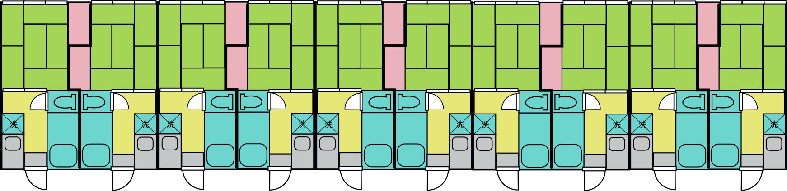

元素：原子の種類のこと。 いろんな元素があります！
ほかにもたくさんあります。
物質の中には同じパターンの並びが 繰り返されている構造をしているものがあります。

イメージ例/ 同じ間取りがつづくアパート。
原子どうしの間隔は0.0000001ミリメートル(0.1ナノメートル)くらい！
どのような結晶があるでしょうか？ 身近なものから見ていきましょう！
1円玉やアルミ缶の材料になるとても軽い金属です。
丈夫な金属で、鉄鋼材料になったりいろいろなところで使われます。 磁石にくっつく性質もあります。 また、他の金属よりもとても安く、お財布に優しいのも魅力的です。
ダイヤモンドと黒鉛は、どちらも炭素原子からできています。 ダイヤモンドは透明で硬く、黒鉛は黒くて柔らかい(鉛筆やシャープペンシルの芯としてすり減っていく)のは、 結晶構造の違いと、その中の電子の動き方の違いによります。
みなさんが料理に使う塩はナトリウム(Na)と塩素(Cl)という元素からできています。 岩塩の大きな結晶は、レゴブロックで作ったような形をしています。 熱い飽和食塩水をゆっくり冷やして実際に作ってみることも出来ます。 お家で試してみましょう！
出展：www.nobelprize.org
2014年にノーベル物理学賞受賞を受賞した3人の博士が作った青色発光ダイオードは ガリウム(Ga)と窒素からなるこんな結晶構造をしています。 赤緑青の三色が揃ったことにより電球が作れるようになり、 世界中のいろんな家を明るく照らせるようになりました。

ドライアイスは酸素と炭素からできる二酸化炭素を冷やして固めたものです。 分子同士のつながりがとても弱く、融けずに直接気体になります。
ネオジム磁石は鉄とホウ素(B)とネオジム(Nd)という元素からできる複雑な結晶構造をしている超強力な磁石です。 実際は砂粒より細かい結晶を焼き固めて作ります。 強い磁石は電気自動車のモーターなどに使われます。
氷は水(H2O)が0℃で固まったものです。 実際は水素(H)じっとしておらず、酸素の間でフラフラしています。
砂糖の分子はいろいろな種類があり、それぞれ味が違います。 代表的な砂糖であるスクロースはこんな構造をしています。 氷と同じように、分子同士は水素を挟んでくっついています。 みなさんがお家で梅酒を作る時に使う氷砂糖は氷と少し似ていますね。
出展：www.nobelprize.org
ウイッティンガム博士はリチウム(Li)が動き回って充電・放電するリチウムイオン電池を考案しました。 グッドイナフ博士はこのリチウムイオン電池のプラス極をこの物質にするともっとよく発電できることを発見し、 さらに吉野博士が炭素からなるマイナス極を作ったことにより 現在みなさんが使っている小さくて強力な充電池が出来上がりました。
水晶はケイ素と酸素からできる石英というものの別名です。 普通の水晶は透明ですが、鉄がほんの少し混ざったものは紫色の紫水晶になります。 ルビーやサファイヤももとはアルミニウムと酸素からできたコランダムという透明な物質ですが、 クロム、鉄、チタンなどの元素がほんの少し混ざると赤や青になります。 このようにほんの少し入った元素を不純物と言います。
地球は外側から「地殻」、「上部マントル」、「下部マントル」、「外核」、「内核」という層になっています。 マントルはケイ素(Si)、マグネシウム(Mg)、酸素(O)からできており、 内核と外核は鉄でできていると言われています。 地球内部の詳しい様子は直接知ることが出来ず、まだ謎が多いです。
超伝導は電気抵抗がゼロになり電気がとてもよく流れる現象です。 超伝導体で作ったコイルをつかってリニアモーターカーを浮かせたり走らせたりしています。 現在山梨で使われているのはニオブ(Nb)とチタン(Ti)からできた超伝導体で、 とても冷たくしなければ超伝導になりません(マイナス270℃くらい)。 もっと使いやすい温度で超伝導になるもの(高温超伝導体)の研究がされており、 そのひとつのBSCCO2223はビスマス(Bi)、ストロンチウム(Sr)、カルシウム(Ca)、銅(Cu)、酸素(O)からできています。
物性理論の研究テーマのうちのひとつは、 このような結晶構造のもとで物質はどのような性質を示すか？それはなぜか？ そもそもなぜそのような結晶構造になるのか？ 新しい物質を作るにはどうすればよいか？ というものです。 このテーマのもとで、私たちはコンピューターを使ってシミュレーションをしたり、自分で新たな法則をみつけたりしています。